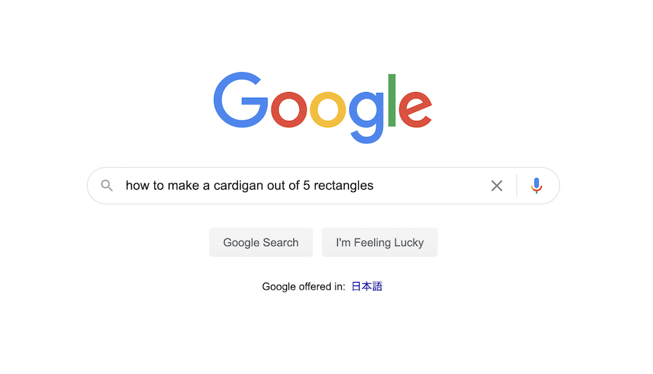
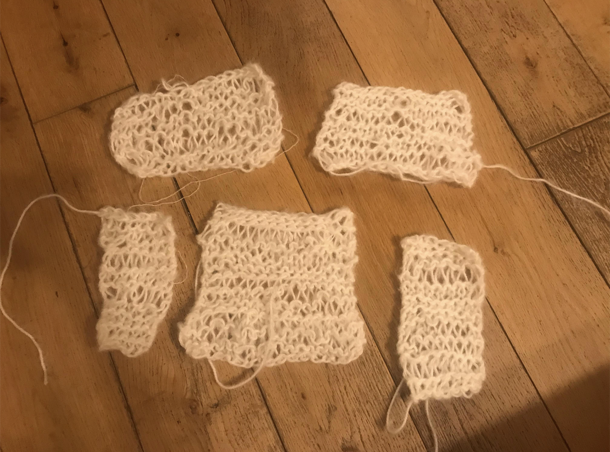
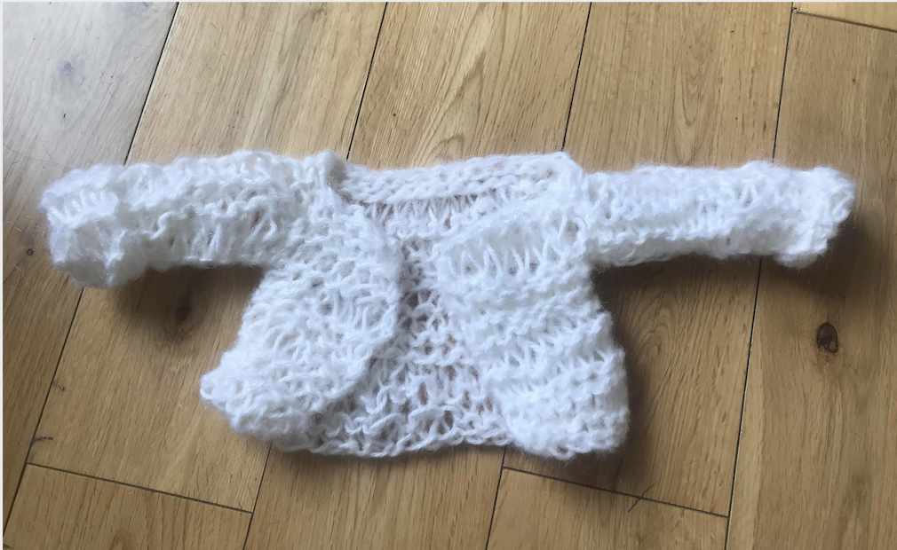

Knitted prototype: how to make a cardigan out of five rectangles
During the 2020 lockdowns, I set myself two personal projects.
One was to design and build a website, and the other was to knit myself a white mohair cardigan.
Here I have written down the process to which I went about doing the latter.

Setting the scene and Desk research
blah blah blah

Knitting small
blah blah
blahh
